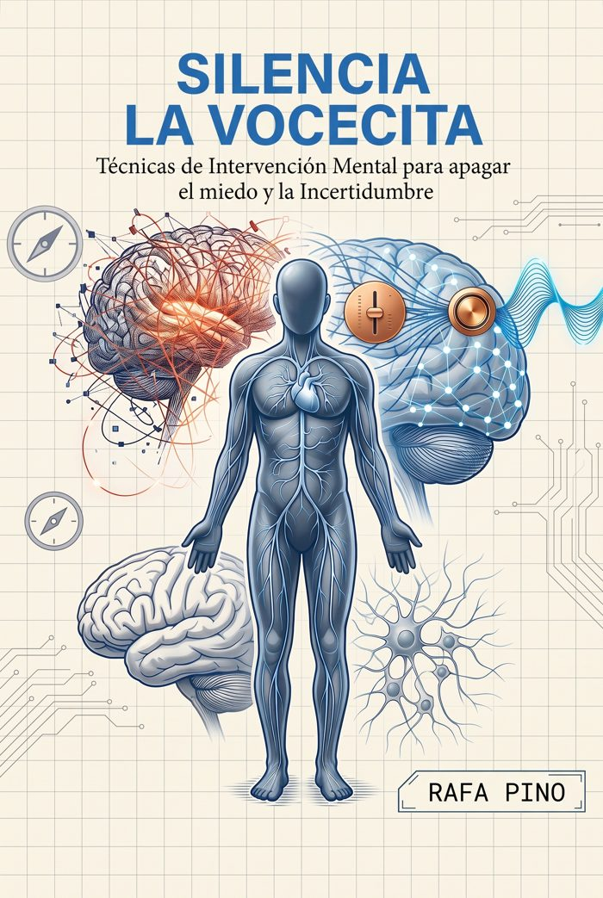

Bono 2 · Bono estrella · Valor $29 por separado
Silencia la Vocecita
Técnicas de intervención mental, con respaldo científico, para apagar esa voz interna que siembra miedo e incertidumbre justo cuando necesitas decidir con calma. Tres partes, 14 capítulos y 14 láminas ilustradas.
El libro se vende por separado a $29. Aquí viene incluido con el sistema.
Ver los 14 capítulos
- 01Lo que realmente es la vocecita
- 02Cómo se instalan los programas mentales
- 03El cuerpo reacciona antes que la mente
- 04El 85-95%: por qué piensas lo mismo todos los días
- 05El primer paso: hacerte consciente del patrón
- 06La pausa que cambia todo: mindfulness y respiración
- 07Hacerte cargo: la lección detrás del Ho'oponopono
- 08Afirmaciones que sí funcionan
- 09Mantras y repetición: instalar el nuevo camino
- 10Anclas de activación: música, símbolos e imágenes
- 11El calendario real del cambio: 21, 40 o 66 días
- 12Cuando la vocecita vuelve
- 13Tu protocolo diario
- 14Casos y ejemplos prácticos